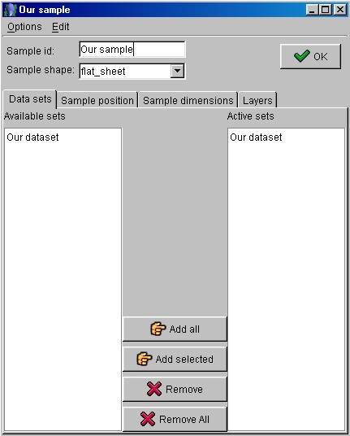

Building the analysis file (step 4)
- Choose the "Samples" tabPanel.
- Press the 'Add new' button to add a new sample. Double-click on it to change the name at
your preference. Then click the 'Edit' button. Change the sample shape choosing the
"flat_sheet" option.
The editing window also contains four tabPanels: "Datasets", "Sample
position", "Sample dimensions" and "Layers".
- In the first tabPanel "Datasets" you can find the dataset previously defined
in the "Available sets" listbox. Select on it and immediately afterwards
click on the 'Add selected'
button in order to set active your dataset.

Datasets tabPanel
- Go to the "Sample dimensions" tabPanel and input the following data for the
sample:
Axial = 20.0 (vertical direction)
Equatorial = 20.0 (horizontal direction)
Thickness = 1.0
- Click on the 'OK' button and leave the frame.